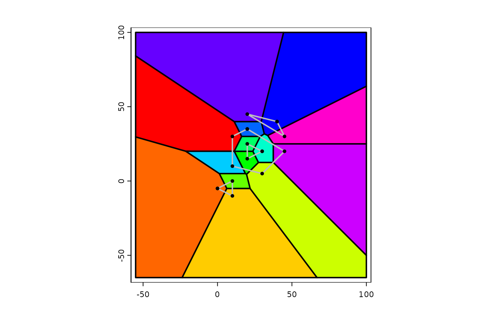

Voronoi diagram and Delaunay triangles
voronoi.RdGet a Voronoi diagram or Delaunay triangles for points, or the nodes of lines or polygons
Usage
# S4 method for SpatVector
voronoi(x, bnd=NULL, tolerance=0, as.lines=FALSE, deldir=FALSE)
# S4 method for SpatVector
delaunay(x, tolerance=0, as.lines=FALSE)Arguments
- x
SpatVector
- bnd
SpatVector to set the outer boundary of the voronoi diagram
- tolerance
numeric >= 0, snapping tolerance (0 is no snapping)
- as.lines
logical. If
TRUE, lines are returned without the outer boundary- deldir
logical. If
TRUE, thedeldiris used instead of the GEOS C++ library method. It has been reported thatdeldirdoes not choke on very large data sets
Examples
wkt <- c("MULTIPOLYGON ( ((40 40, 20 45, 45 30, 40 40)),
((20 35, 10 30, 10 10, 30 5, 45 20, 20 35),(30 20, 20 15, 20 25, 30 20)))",
"POLYGON ((0 -5, 10 0, 10 -10, 0 -5))")
x <- vect(wkt)
v <- voronoi(x)
v
#> class : SpatVector
#> geometry : polygons
#> dimensions : 14, 0 (geometries, attributes)
#> extent : -55, 100, -65, 100 (xmin, xmax, ymin, ymax)
#> coord. ref. :
d <- delaunay(x)
d
#> class : SpatVector
#> geometry : polygons
#> dimensions : 18, 0 (geometries, attributes)
#> extent : 0, 45, -10, 45 (xmin, xmax, ymin, ymax)
#> coord. ref. :
plot(v, lwd=2, col=rainbow(15))
lines(x, col="gray", lwd=2)
points(x)
